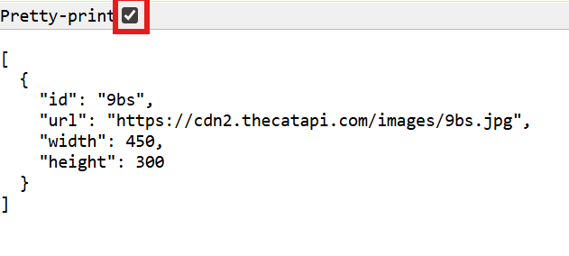

getting an image with CatAPI
Let's start by looking at how you can use Cat API without an API key. While the more complex functionality requires you to supply an API key, you can still do simpler things like retreive a random image of a cat.
Let's try that out now! This guide will cover calling an API using Javascript, but you can also do it using Python or other languages. Here's the javascript code for calling the cat API:
const catapi_call = await fetch('https://api.thecatapi.com/v1/images/search')
The fetch command, used above, is just a way to get data from an API. The request takes a URL for the API its pulling from which tells it where to get the data. Here, it looks at the catapi's API (which is why its https://api...), then checks the images it provides, and retrives the search information.
Since we're using await, we need an async function. All of our code will now be added to this function, which we'll later call whenever the DOM loads. See below for what you should have so far!
async function setRandomCatImage() {
const catapi_call = await fetch('https://api.thecatapi.com/v1/images/search")
...add more here...
}
You can actually view the API on the web if you go to the url, which is super useful when you need to figure out what the name is for a piece of data you want to retrieve.
For the url above, check it out at https://api.thecatapi.com/v1/images/search!
If you click the pretty-print checkbox, you will be able to see it like below:
This is the API's raw data. When you call fetch on the url for this data, your code will grab this raw data.
But since we can't work with it in its raw form, you can convert it to JSON. Create a new variable to store the json-parsed data:
const catapi_json = await catapi_call.json()
Now that you have the JSON, let's get your image from it! If you check the raw data again, you're going to need to get the url, width, and height in order to correctly display your image.
Next, create variables and extract specific properties from the JSON. Since CatAPI will return an array of values (one per image) and we only requested one image, we can just index into the first array.
const img_url = catapi_json[0].url
const img_width = catapi_json[0].width
const img_height = catapi_json[0].height
Using that, let's display your image! In order to identify your HTML image element in Javascript, you're going to need to add an ID attribute.
<img id="catapi_image_elem">
Now, in Javascript, create a constant which references the HTML image element.
const image_elem = document.getElementById('catapi_image_elem')
Now, beneath everything you've written so far in your Javascript file, write a few lines which change the src attribute of your image to the src from the api, sets your image width to img_width, and sets image height to img_height
image_elem.src = img_url
image_elem.width = img_width
image_elem.height = img_height
By now, your code should look like this:
async function setRandomCatImage() {
const catapi_call = await fetch('https://api.thecatapi.com/v1/images/search')
const catapi_json = await catapi_call.json()
const img_url = catapi_json[0].url
const img_width = catapi_json[0].width
const img_height = catapi_json[0].height
const image_elem = document.getElementById('catapi_image_elem')
image_elem.src = img_url
}
Finally, we need to call this function when the DOM loads!
document.addEventListener('DOMContentLoaded', setRandomCatImage)
async function setRandomCatImage() {
const catapi_call = await fetch('https://api.thecatapi.com/v1/images/search')
const catapi_json = await catapi_call.json()
const img_url = catapi_json[0].url
const img_width = catapi_json[0].width
const img_height = catapi_json[0].height
const image_elem = document.getElementById('catapi_image_elem')
image_elem.src = img_url
}
When you view your website, you'll now see a random cat image or gif like the one below!
If you don't, go back through this guide and make sure that you've followed every step, and check your code against the final provided block.
When you reload your site, you'll see another, (the same applies here) since your javascript will call the API again which will return a new random image url!
That's it! That's all you need to do to call an API. If you'd like to, you can check out
other APIsor
learn how to use an API key